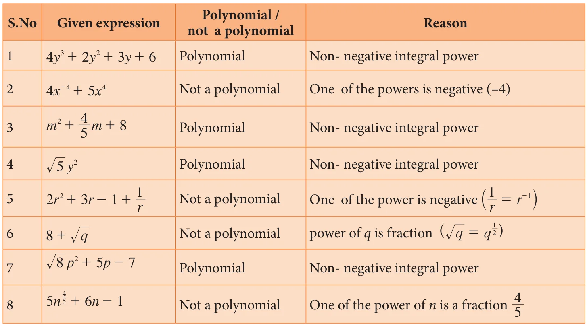
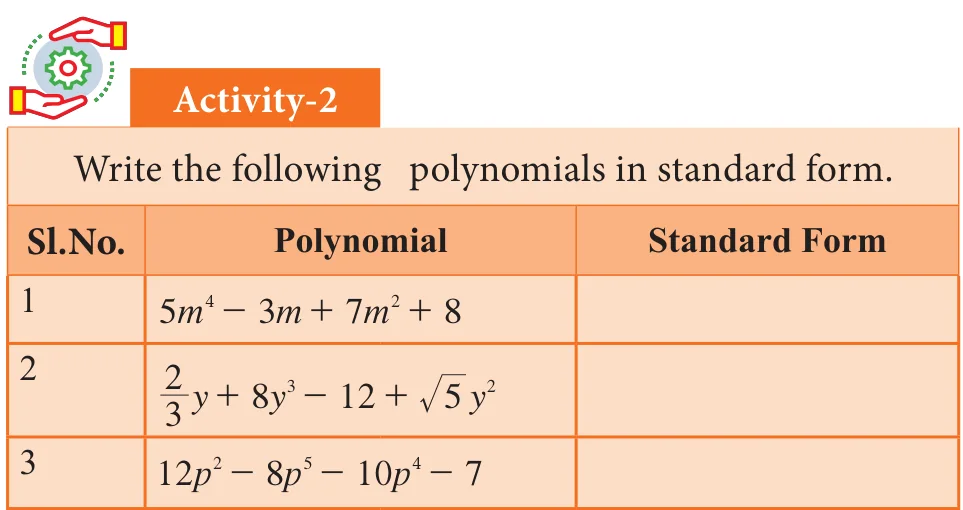
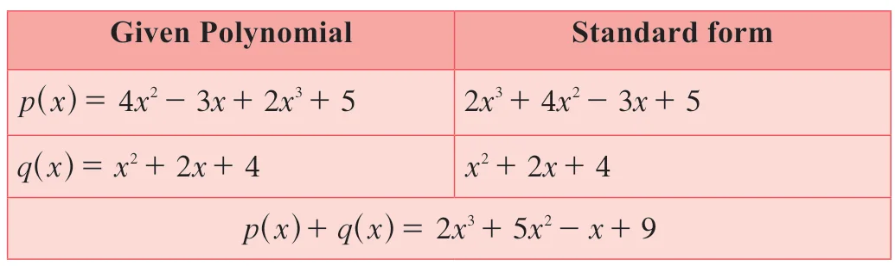
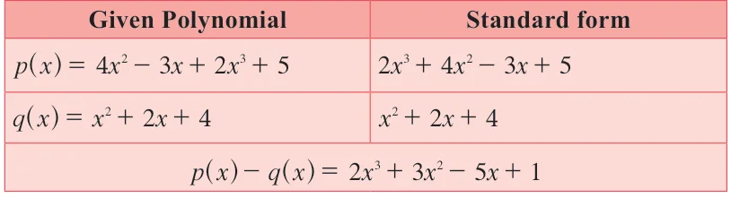
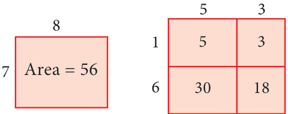
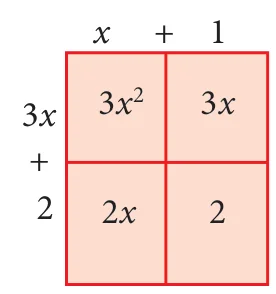

A polynomial is an arithmetic expression consisting of variables and constants that involves four fundamental arithmetic operations and non-negative integer exponents of variables.
Polynomial in One Variable
An algebraic expression of the form \(p(x) = a_n x^n + a_{n-1} x^{n-1} + \ldots + a_2 x^2 + a_1 x + a_0\) is called Polynomial in one variable \(x\) of degree '\(n\)' where \(a_0, a_1, a_2, \ldots, a_n\) are constants \(a_n \neq 0\) and \(n\) is a whole number. In general polynomials are denoted by \(f(x), g(x), p(t), q(z)\) and \(r(x)\) and so on.
Note
The coefficient of variables in the algebraic expression may have any real numbers, where as the powers of variables in polynomial must have only non-negative integral powers that is, only whole numbers. Recall that \(a^0 = 1\) for all \(a\).
For example,

Standard Form of a Polynomial
We can write a polynomial \(p(x)\) in the decreasing or increasing order of the powers of \(x\). This way of writing the polynomial is called the standard form of a polynomial.

For example: (i) \(8x^4 + 4x^3 - 7x^2 - 9x + 6\) \(\quad\) (ii) \(5 - 3y + 6y^2 + 4y^3 - y^4\)
Degree of the Polynomial
In a polynomial of one variable, the highest power of the variable is called the degree of the polynomial. In case of a polynomial of more than one variable, the sum of the powers of the variables in each term is considered and the highest sum so obtained is called the degree of the polynomial. This is intended as the most significant power of the polynomial. Obviously when
we write \(x^2 + 5x\) the value of \(x^2\) becomes much larger than \(5x\) for large values of \(x\). So we could think of \(x^2 + 5x\) being almost the same as \(x^2\) for large values of \(x\). So the higher the power, the more it dominates. That is why we use the highest power as important information about the polynomial and give it a name.
Example 3.1
Find the degree of each term for the following polynomial and also find the degree of the polynomial \(6ab^8 + 5a^2 b^3 c^2 - 7ab + 4b^2 c + 2\)
Solution
Given polynomial is \(6ab^8 + 5a^2 b^3 c^2 - 7ab + 4b^2 c + 2\)
Degree of each of the terms is given below.
\(6ab^8\) has degree \((1+8) = 9\)
\(5a^2 b^3 c^2\) has degree \((2+3+2) = 7\)
\(7ab\) has degree \((1+1) = 2\)
\(4b^2 c\) has degree \((2+1) = 3\)
The constant term 2 is always regarded as having degree Zero.
The degree of the polynomial \(6ab^8 + 5a^2 b^3 c^2 - 7ab + 4b^2 c + 2\)
= the largest exponent in the polynomial = 9
A very Special Polynomial
We have said that coefficients can be any real numbers. What if the coefficient is zero? Well that term becomes zero, so we won't write it. What if all the coefficients are zero? We acknowledge that it exists and give it a name.
It is the polynomial having all its coefficients to be zero.
\(g(t) = 0t^4 + 0t^2 - 0t\), \(\quad h(p) = 0p^2 - 0p + 0\)
From the above example we see that we cannot talk of the degree of the zero polynomial, since the above two have different degrees but both are zero polynomial. So we say that the degree of the zero polynomial is not defined.
The degree of the zero polynomial is not defined
Types of Polynomials


3.2.1 Arithmetic of Polynomials
We now have a rich language of polynomials, and we have seen that they can be classified in many ways as well. Now, what can we do with polynomials? Consider a polynomial on x. We can evaluate the polynomial at a particular value of x. We can ask how the function given by the polynomial changes as x varies. Write the polynomial equation \(p(x) = 0\) and solve for \(x\). All this is interesting, and we will be doing plenty of all this as we go along. But there is something else we can do with polynomials, and that is to treat them like numbers! We already have a clue to this at the beginning of the chapter when we saw that every positive integer could be represented as a polynomial. Following arithmetic, we can try to add polynomials, subtract one from another, multiply polynomials, divide one by another. As it turns out, the analogy between numbers and polynomials runs deep, with many interesting properties relating them. For now, it is fun to simply try and define these operations on polynomials and work with them.
Addition of Polynomials
The addition of two polynomials is also a polynomial.
Note
Only like terms can be added. \(3x^2 + 5x^2\) gives \(8x^2\) but unlike terms such as \(3x^2\) and \(5x^3\) when added gives \(3x^2 + 5x^3\), a new polynomial.
Example 3.4
If \(p(x) = 4x^2 - 3x + 2x^3 + 5\) and \(q(x) = x^2 + 2x + 4\), then find \(p(x) + q(x)\)
Solution

We see that \(p(x) + q(x)\) is also a polynomial. Hence the sum of any two polynomials is also a polynomial.
Subtraction of Polynomials
The subtraction of two polynomials is also a polynomial.
Note
Only like terms can be subtracted. \(8x^2 - 5x^2\) gives \(3x^2\) but when \(5x^3\) is subtracted from \(3x^2\) we get, \(3x^2 - 5x^3\), a new polynomial.
Example 3.5
If \(p(x) = 4x^2 - 3x + 2x^3 + 5\) and \(q(x) = x^2 + 2x + 4\), then find \(p(x) - q(x)\)
Solution

We see that \(p(x) - q(x)\) is also a polynomial. Hence the subtraction of any two polynomials is also a polynomial.
Multiplication of Two Polynomials

Divide a rectangle with 8 units of length and 7 units of breadth into 4 rectangles as shown below, and observe that the area is same, this motivates us to study the multiplication of polynomials.
For example, considering length as \((x+1)\) and breadth as \((3x+2)\) the area of the rectangle can be found by the following way.

Hence the area of the rectangle is
\(= 3x^2 + 3x + 2x + 2\)
\(= 3x^2 + 5x + 2\)
If \(x\) is a variable and \(m, n\) are positive integers then \(x^m \times x^n = x^{m+n}\).
When two polynomials are multiplied the product will also be a polynomial.
Example 3.6
Find the product \((4x - 5)\) and \((2x^2 + 3x - 6)\).
Solution
To multiply \((4x - 5)\) and \((2x^2 + 3x - 6)\) distribute each term of the first polynomial to
every term of the second polynomial. In this case, we need to distribute the terms \(4x\) and \(- 5\). Then gather the like terms and combine them:
\((4x - 5)(2x^2 + 3x - 6) = 4x(2x^2 + 3x - 6) - 5(2x^2 + 3x - 6)\)
\(= 8x^3 + 12x^2 - 24x - 10x^2 - 15x + 30\)
\(= 8x^3 + 2x^2 - 39x + 30\)
Aliter: You may also use the method of detached coefficients:
\(\therefore \quad (4x - 5)(2x^2 + 3x - 6) = 8x^3 + 2x^2 - 39x + 30\)